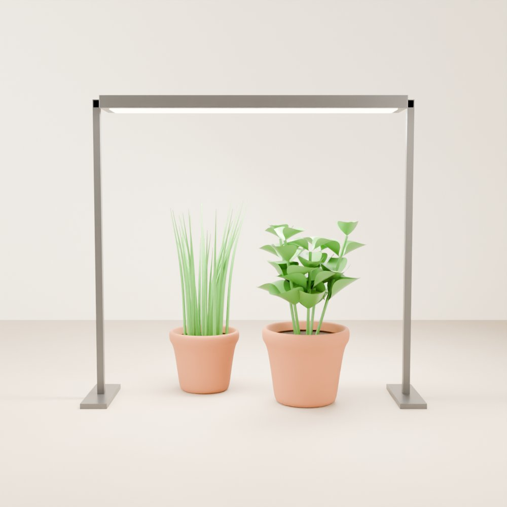

Beginner guide · Light
Light, made simple.
Plants eat light. Indoors, not enough light is the most common reason plants grow slowly or stretch out. Here's how much they need, and how to give it to them.

01 The idea
Why light matters so much
Plants make their own food from light. The more good light they get (up to a point), the faster and sturdier they grow. A room that looks bright to us is often quite dim to a plant, because our eyes adjust and theirs don't.
Light comes down to three things:
- How strong it is. A sunny window or a proper grow light, not a lamp across the room.
- How close it is. Light gets weaker fast as you move away from it. Even a metre (about 3 feet) back from a window is much dimmer than right beside the glass.
- How long it's on. Most food plants want a long "day" and a proper night.
02 Your options
Window or grow light?
03 How long
How many hours a day
Plants need a night too, so don't leave the light on 24 hours. A cheap plug-in outlet timer does the remembering for you.
| What you're growing | Light on | Notes |
|---|---|---|
| Seedlings | 14 to 16 h | Strong light from the day they sprout, or they stretch. |
| Microgreens | 12 to 16 h | Dark for the first 2 to 4 days under the cover, then light. |
| Lettuce and leafy greens | 12 to 16 h | Like it cool. Too much heat makes lettuce bitter. |
| Herbs | 12 to 16 h | Basil loves lots of light; mint and parsley cope with less. |
| Tomatoes and peppers | 14 to 16 h | Need much stronger light than greens to flower and fruit. |
Times are a guide. Your plants will tell you if they want more (see troubleshooting below).
04 Method
Setting up a grow light
-
Hang it above the plants
Light should come from above, so plants grow straight up. A shelf with the light hung or stuck under the shelf above works well.
-
Start at the height on the box
Every light is different, so follow the maker's advice. Many small LEDs for greens sit about 15 to 30 cm (6 to 12 inches) above the leaves. If there's no advice, start around 30 cm (12 inches) and adjust.
-
Got a dimmer? Use it instead of moving the light
A built-in dimmer lets you set how strong the light is while it stays at one height. Every light is different, so treat these as a rough starting point:
- Seedlings and microgreens: low, about 25 to 50%.
- Leafy greens and herbs: medium, about 50 to 75%.
- Tomatoes and peppers: high, 75 to 100%.
Start low and turn it up a little every few days, watching the leaves. Pale patches on top mean it's too strong; stretching means it's too weak. Only dim a light that says it's dimmable, using its own dial or controller, not a regular wall dimmer.
-
Do the hand test
Hold the back of your hand at leaf height for half a minute. If it feels hot, the light is too close.
-
Set a timer
Plug the light into an outlet timer and set your hours, for example 7 am to 9 pm for 14 hours.
-
Raise it as they grow
Keep about the same gap between the light and the top leaves as the plants get taller.
- Keep it safe. Hang lights securely, keep cords and plugs away from water and spills, and don't cover a light with cloth or paper. Near water setups, plug into an outlet with a GFCI (the kind with test and reset buttons, called an RCD in some countries).
05 Troubleshooting
If something looks wrong
- Tall, thin, floppy plants with big gaps between leaves
- Not enough light. They're stretching to reach it. Move the light closer, add hours, or move them nearer the window.
- Plants leaning hard to one side
- They're reaching for a window. Turn them every few days, or add a light above.
- Pale, washed-out, or white patches on the top leaves
- The light may be too close or too strong. Raise it a little. (If the whole plant is pale, check the pH and plant food too.)
- Crispy edges or leaves curling up near the light
- Often too hot or too close. Raise the light and check the room isn't too warm.
- Lettuce suddenly shoots up a tall stalk
- That's bolting. Heat is the main cause, and very long days can add to it. Keep lettuce cool and stick to 12 to 16 hours.
Show us your setup
Window shelf or grow-light rack? Join the Root Collective and share what's working for you.
Join us, it's free